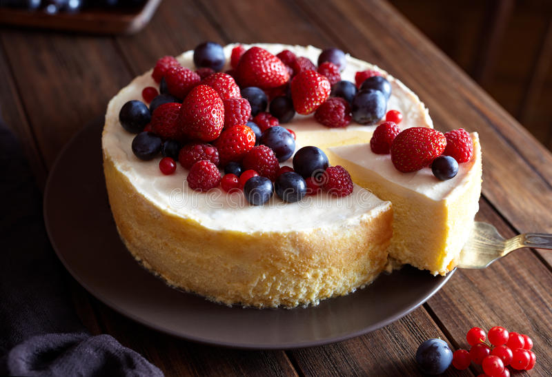

Cheesecake receipt

Description
This Easy Cheesecake Recipe comes out perfect every time!
Make creamy, smooth cheesecake baked in a homemade graham
cracker crust.
Ingredients
- four 8-ounce blocks (904g) full-fat cream cheese, softened to room temperature
- 1 cup (200g) granulated sugar
- 1 cup (240g) full-fat sour cream, at room temperature.
- 1 teaspoon pure vanilla extract.
- teaspoons fresh lemon juice (optional, but recommended)
- 3 large eggs, at room temperature.
Steps
- Bring Your Ingredients to Room Temperature
- Make Your Graham Cracker Crust
- Make Your Cheesecake Filling
- Bake Your Cheesecake
- Chill Your Cheesecake